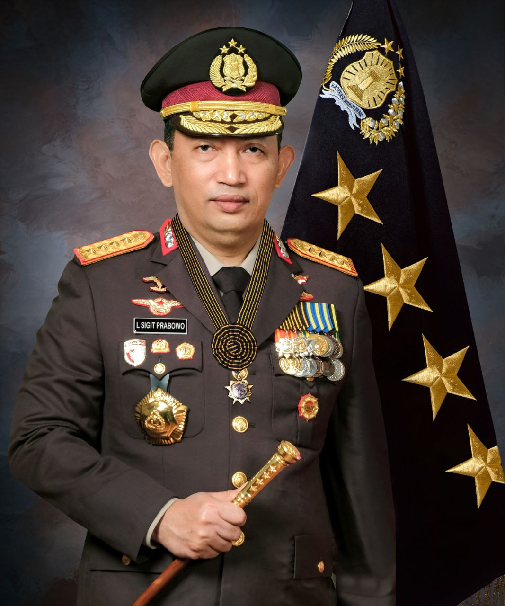

Visi dan Misi Polri

Visi
Terwujudnya Indonesia yang Aman dan Tertib guna mendukung Visi dan Misi Presiden dan Wakil Presiden : "Indonesia Maju yang Berdaulat, Mandiri, dan Berkepribadian Berlandaskan Gotong-Royong".
Misi
Melindungi, mengayomi dan melayani masyarakat dalam memberikan perlindungan bagi segenap bangsa dan memberikan rasa aman kepada seluruh warga serta mendorong kemajuan budaya yang mencerminkan kepribadian bangsa; serta menegakkan sistem hukum yang bebas korupsi, bermartabat dan terpercaya dan menjamin tercapainya lingkungan hidup berkelanjutan
Adapun Janji Presiden (JP) di Polri ialah :
- penegakkan hukum terhadap kejahatan Premanisme, Lingkungan Hidup, Narkoba, TPPU, Radikalisme, Terorisma dan Intoleransi serta PPA;
- meningkatkan Sinergi dan Kerjasama antar Lembaga penegak hukum dan TNI;
- mengembangkan profesionalisme dan kesejahteraan anggota Polri, reformasi birokrasi guna menekan budaya koruptif dan tindakan yang berlebihan atau kekerasan eksesif;
Tujuan
- menjamin terpeliharanya keamanan dan ketertiban masyarakat di seluruh wilayah NKRI;
- menegakkan hukum secara berkeadilan;
- mewujudkan Polri yang profesional;
- modernisasi pelayanan Polri;
- menerapkan manajemen Polri yang terintegrasi dan terpercaya.